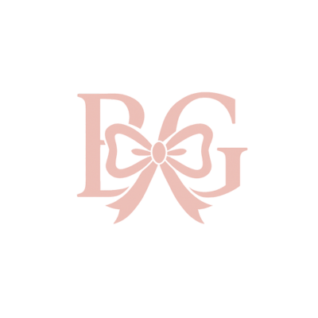

Redesigning the digital presence of an international music education organization — and designing the ecosystem strategy that connected it to a sister business already live in production.
Explore the design files and live site
The live site follows the page architecture I designed. Some visual elements — including the color scheme — were updated by the team after I left.
Iceland Program — Hi-Fi Designs
The Global Conservatory is an international online music education organization — think Juilliard-level instruction, fully remote. When I joined as the sole UX Designer, the organization was mid-transformation: rebuilding its public-facing digital presence while simultaneously launching a brand new program and managing a relationship with a sister business, The Musician's Club.
I came in with no background in music. My first job was to learn enough to design for people who had spent their lives in it — students, faculty, international visitors, donors. I went straight to the founder, a Juilliard alumnus, and used his domain knowledge as my primary research input alongside competitive analysis of other music education platforms he admired.
Create a unified, modern digital presence across three simultaneous projects — with full creative ownership, Apple-inspired clarity as the design north star, and a mandate to connect two separate businesses without confusing users about which one they were on.
The existing site had a fundamental information architecture problem: everything was on the surface, all at once. Dense blocks of text with no visual hierarchy, no imagery, no "read more" progressive disclosure — just walls of content with nowhere to breathe. Users had no way to scan, orient, or decide what to do next.
The navigation compounded the issue. Too many top-level tabs with no clear structure forced users to read everything just to find anything. The home page — the first impression for students, faculty, and international visitors arriving from completely different contexts — was the worst offender. When the home page fails, every page behind it fails too.
The Musician's Club — a separate instrument retail business — shared stakeholder interest with Global Conservatory. The two weren't formally one brand, but students who studied at GC needed instruments, and TMC sold them. My job was to surface that connection in a way that felt natural, not forced — without making users feel like they'd accidentally landed somewhere else.
Over three months, I owned creative direction and design execution across three simultaneous projects — plus social media content — with no other designer on the team. Each project had its own brief, its own personality, and its own stakeholder feedback loop.
Complete audit and redesign of existing pages. Rebuilt information architecture, introduced visual hierarchy, added imagery and progressive disclosure throughout. The home page was the anchor — fix that first, and everything follows.
No existing design, no visual precedent. I was handed a 30-page specification document of business goals and program details, and worked backwards from that to create a full experience — inspired by Airbnb's approach to immersive travel-focused design.
Provided design feedback and contributed a page redesign. Also designed the cross-promotional strategy that connected GC and TMC — now live as a site-wide banner on the Global Conservatory homepage directing students to shop at The Musician's Club.
Designed promotional content across platforms in parallel with the web work — maintaining brand consistency between the refreshed site and the social presence as they evolved together.
This was a startup environment — timelines shifted, new stakeholders appeared mid-project with new opinions, and scope expanded as leadership got excited about what was being built. My process had to flex with that reality while keeping the design work grounded.
The information architecture and navigation structure I designed is live on theglobalconservatory.com. The team later updated the color scheme — but the underlying structure held. Good IA outlasts visual decisions.
The cross-promotional strategy I designed — connecting Global Conservatory to The Musician's Club — is visible as a site-wide banner on the GC homepage today. Two separate businesses, one cohesive user journey.
Academic, travel-focused, and community-based pages felt cohesive without losing their individual character — each had its own tone while belonging to the same visual system.
The visual upgrade and improved content organization were consistently highlighted in feedback. The founder's Apple-inspired brief was met.
The Iceland program was still in development when I left — but the design foundation, documentation, and creative direction I established became the basis for continued work. Being the founding designer on a project that outlasts your time there is its own kind of outcome.
Users don't read — they scan. Giving them density without hierarchy isn't informative, it's a wall. Progressive disclosure isn't a nice-to-have; it's the difference between a site people use and one they leave.
Coming in with zero music background forced me to research before I designed. That constraint made the work more honest — every decision was grounded in what I actually learned, not what I assumed.
The team changed the color scheme after I left. The architecture stayed. That's not a consolation — it's proof that IA work is the work that actually ships.
New stakeholders appeared mid-project with new opinions. Sharing wireframes before full execution meant feedback came when changes were cheap — not after hours of polished work that had to be redone.
This wasn't just a visual refresh — it was a systems problem. Three projects, two businesses, one designer, three months. The work that shipped is still live. That's the measure that matters.